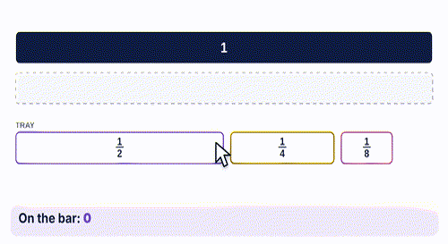

1-minute video · captions on screen
What it is
The top bar is 1 whole. Every row under it fills the same space.
- Compare: line tiles up from the left edge. The longer row is the bigger fraction.
- Equal fractions: different tiles that end at the same spot.
- Add: put tiles end to end and read how much of the whole they cover.
How to use the tool
- Build with tiles: drag tiles from the tray onto the bar under the 1.
- The sum shows below the bar. If a tile won't fit, the tool says so.
- Shade the wall: drag across a row to shade it.
- Drag the yellow line to see which tiles line up.

Try this with your class
Which is greater, 2/3 or 3/4?
- Build 2/3 on one bar and 3/4 on another.
- Line them up from the left. Which ends farther right?
- 3/4 is longer, so 3/4 is greater. Ask: how much more? (Look for a tile that fills the gap: 1/12.)
Watch for
Bigger denominator, bigger fraction.Put 1/3 and 1/4 side by side. More pieces means smaller pieces.
Losing the whole.Fractions only compare when they come from the same whole. Always ask: what is the whole?
Adding the bottoms.1/2 + 1/4 is not 2/6. Build it: it covers 3/4 of the bar.
Try it yourself
Based on: Math Learning Center, how to use fraction bars · Edutopia, comparing fractions by length.